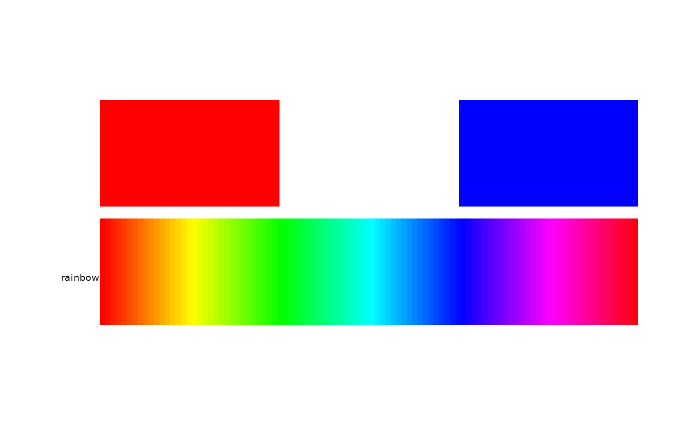
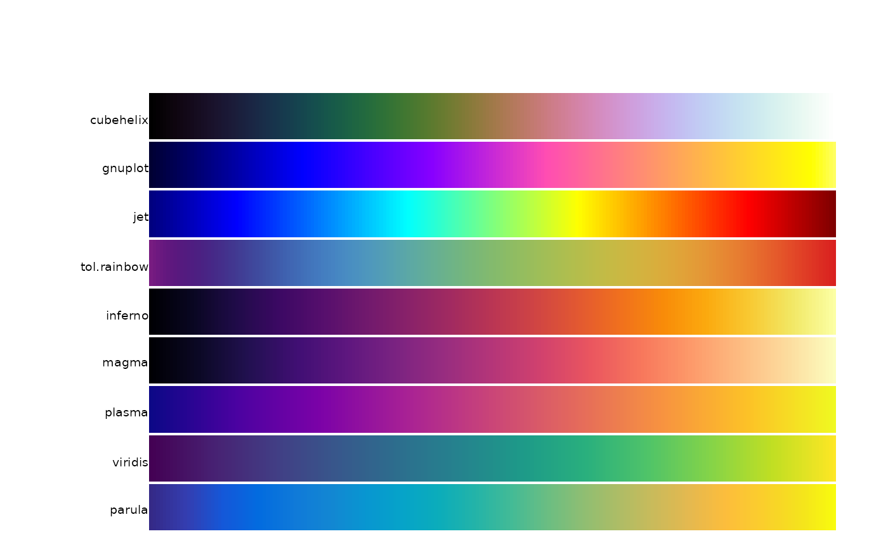
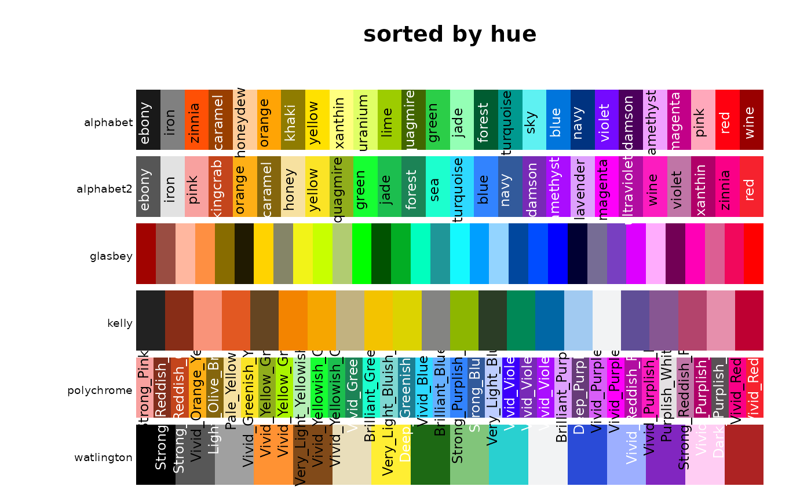
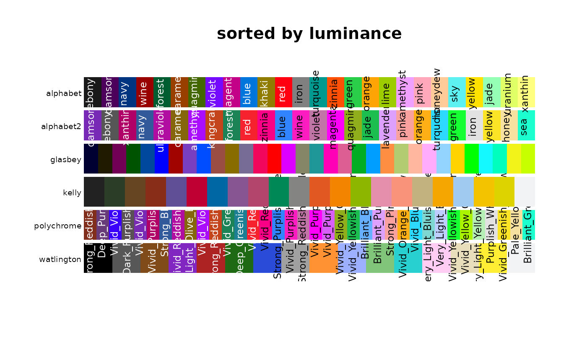

Show palettes as colored bands.
Usage
pal.bands(
...,
n = 100,
labels = NULL,
main = NULL,
gap = 0.1,
sort = "none",
show.names = TRUE
)Arguments
- ...
Palettes/colormaps, each of which is either (1) a vectors of colors or (2) a function returning a vector of colors.
- n
The number of colors to display for palette functions.
- labels
Labels for palettes
- main
Title at top of page.
- gap
Vertical gap between bars, default is 0.1
- sort
If sort="none", palettes are not sorted. If sort="hue", palettes are sorted by hue. If sort="luminance", palettes are sorted by luminance.
- show.names
If TRUE, show color names
Details
What to look for:
1. A good discrete palette has distinct colors.
2. A good continuous colormap does not show boundaries between colors.
For example, the rainbow() palette is poor, showing bright lines at
yellow, cyan, pink.
Examples
pal.bands(c('red','white','blue'), rainbow)

op=par(mar=c(0,5,3,1))
pal.bands(cubehelix, gnuplot, jet, tol.rainbow, inferno,
magma, plasma, viridis, parula, n=200, gap=.05)

par(op)
# Examples of sorting
labs=c('alphabet','alphabet2', 'glasbey','kelly','polychrome', 'watlington')
op=par(mar=c(0,5,3,1))
pal.bands(alphabet(), alphabet2(), glasbey(), kelly(),
polychrome(), watlington(), sort="hue",
labels=labs, main="sorted by hue")

par(op)
pal.bands(alphabet(), alphabet2(), glasbey(), kelly(),
polychrome(), watlington(), sort="luminance",
labels=labs, main="sorted by luminance")
